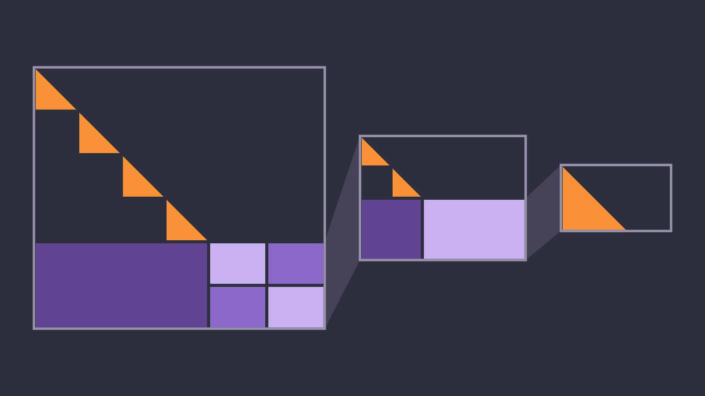
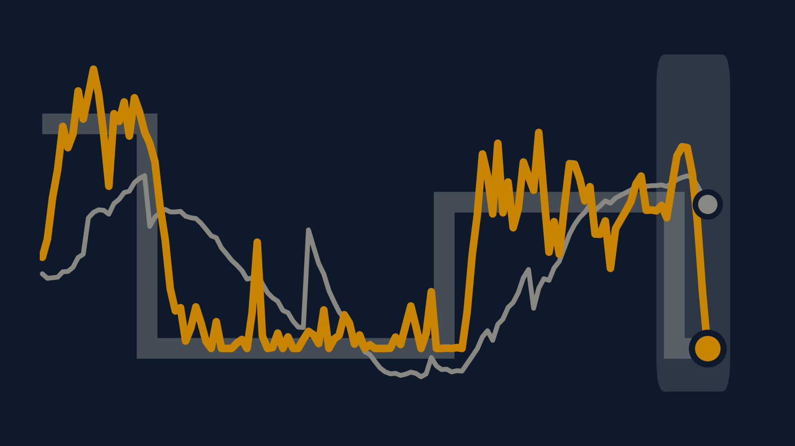
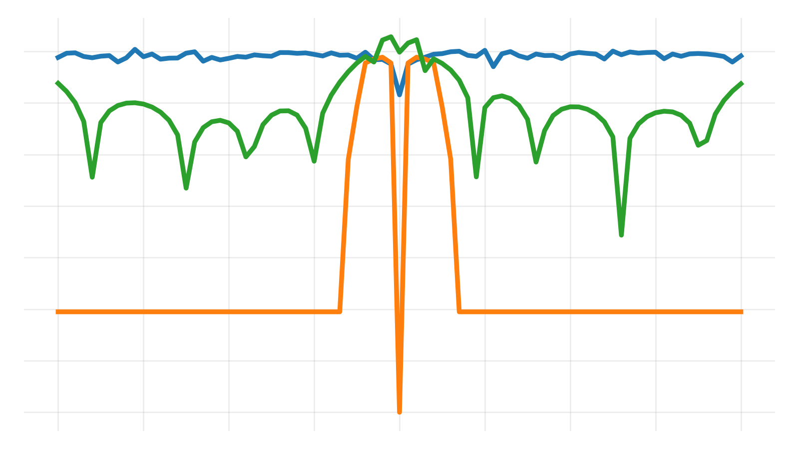

Arjun Sethi-Olowin
I am a Ph.D. candidate in the Department of Applied Mathematics at the University of Washington, advised by Heather Wilber and Aleksandr Aravkin. My research is on efficient algorithms for large-scale optimization and numerical linear algebra.
Most of my current work is on hierarchically semi-separable (HSS) matrices, where I develop fast solvers for linear systems and minimum-norm problems that take advantage of the low-rank structure of these matrices. I also work on Kalman smoothing and filtering for systems with non-Gaussian errors.
For the past two summers I have been a graduate research intern at Sandia National Laboratories, working with Bobby Baraldi on the Rapid Optimization Library team. There I have worked on trust-region methods for PDE-constrained and nonsmooth optimization, using mixed precision and approximate proximal operators to reduce the cost of each iteration.
Before coming to UW, I received a B.A. in Applied Mathematics and Mathematics from Rice University.
Research
All projects →
Fast Solvers for HSS Matrices
Fast direct solvers for hierarchically semi-separable (HSS) matrices, whose off-diagonal blocks are numerically low rank. I develop algorithms for linear systems and minimum-norm problems that exploit this structure, along with MATLAB classes for computing with these matrices.

Robust Kalman Smoothing
Kalman filtering and smoothing for systems whose errors are not Gaussian. I work on the development and theoretical analysis of a hybrid filtering/smoothing method for these nonstandard error distributions.

Proximal Operators for Trust-Region Methods
Proximal operator approximations for nonsmooth trust-region optimization, developed with Sandia's Rapid Optimization Library team. Results to appear in the 2026 CSRI Summer Proceedings.
Mixed-Precision Trust-Region Methods
Mixed-precision gradient methods for trust-region algorithms in PDE-constrained optimization, with theoretical guarantees, developed with Sandia's Rapid Optimization Library team.
Publications & Talks
- ForthcomingViscosity-based Proximal Operators in Nonsmooth, Regularized Optimization
A. Sethi-Olowin and R. Baraldi. - ReportMixed Precision Linear Algebra in Trust-Region Methods for PDE Constrained Optimization
A. Sethi-Olowin and R. Baraldi. - TalkEfficient Solvers for Linear Optimization via the Hierarchically Semi-Separable Matrix Factorization
- TalkEfficient Solvers for Linear Optimization via the Hierarchically Semi-Separable Matrix Factorization